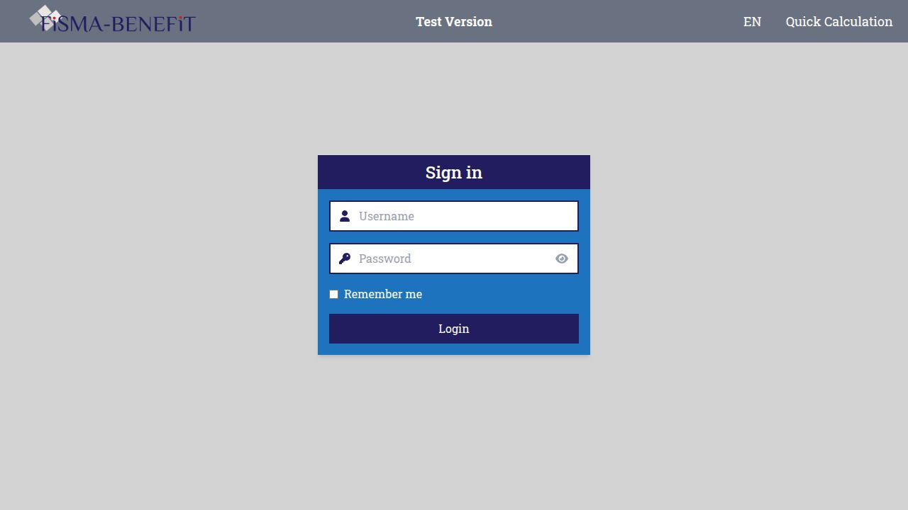
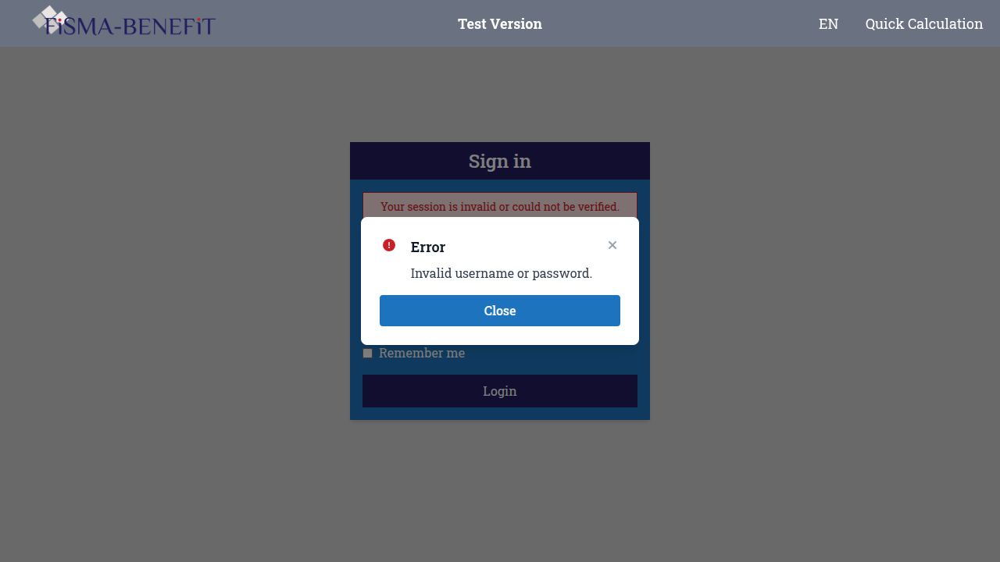

Inspect the local login route only, using the MLA measurement pattern requested by the user. Include the login function and propose its associated UI/business messages. Inventory shared-header controls without visiting their destinations. No application source-code inspection, successful login, other pages or extra storage/security functions were used to expand this measurement.

Class: Interactive end-user navigation and query service. Type: log-in log-out functions. The presence of typed credentials does not automatically make login a create/update/delete input function.
| ID | Element | d | Decision | Rules |
|---|---|---|---|---|
| D01 | Sign in title | 1 | include | G02 |
| D02 | Screen background and static labels | 1 | include once | G02 |
| D03 | Username input | 1 | include | G03 |
| D04 | Password input | 1 | include | G03 |
| D05 | Password visibility button | 1 | include provisionally as an explicit push button; review whether excluded as a quality feature | G05, G10 |
| D06 | Remember me checkbox | 1 | include as an explicit user input; observed checked and unchecked | G03, G05 |
| D07 | Login button | 1 | include | G05 |
| D08 | Out-of-field warning/error presentation | 1 | include once per login function, not once per error string or screenshot | G08 |
Proposed d = 8. If the password toggle is excluded as a quality feature, d becomes 7. Error-dialog dismissal requires separate review; these alternatives are interpretation questions, not “possible points” or a statistical uncertainty interval.
| Observed control | Candidate treatment | Boundary / evidence limit |
|---|---|---|
| FiSMA-BENEFIT logo link | shared function designator | Visible on the login page; destination not opened. Requires application-level allocation to avoid double counting. |
| EN button | Unresolved | Language control observed; behavior and independent-function treatment were not tested or assumed. |
| Quick Calculation button | shared function designator | Visible entry point observed; destination not opened and calculator internals are outside this test. |
The logo, EN and Quick Calculation controls are on the measured page. Allocating their independent services is a scope-manager decision, not permission to inspect their destination pages. Their complete component counts and references have not been invented.

One invented-credential attempt produced this error and stayed on the login route. The underlying session-invalid banner and this dialog are provisionally treated as one per-function error presentation under G08; multiple strings do not automatically mean multiple elements. The Close/X control interpretation is explicitly open.
The core login parent would have d=8 provisionally and an unresolved reading-reference count. These four proposed messages follow MLA Tables 1–4. Values shown as 1 are common-practice pattern values, not observed backend facts; they remain conditional on the agreed pattern and exception review. No login-specific r=2 default was found in the quoted MLA fallback list, so none was silently applied.
| Owning layer | Message | d | r | w |
|---|---|---|---|---|
| UI | UI to business | 8 (provisional) | 1 | Not used |
| business | From UI | 8 (provisional) | 1 | Unresolved |
| business | To UI | 8 (provisional) | Unresolved | Not used |
| UI | From business | 8 (provisional) | 1 | 1 |
No final FP total. UI reading references, business-side message dependencies, completion status and count decisions need resolution. The current MCP can read MLA projects, but its creation tool cannot faithfully save the MLA tree. No project was created, and the tree was not flattened to bypass that limitation.
Freeze this draft. Ask a scope manager to count the same page/states and chosen MLA boundary independently, ideally before seeing the AI count. Compare component inventory, counted/excluded elements, classification, references, defaults and layer assignments before comparing the grand total. No professional baseline was supplied, so there is no accuracy score yet.
Reference provenance: repository measurement reference 0.1.1; GUI pp.1–4, MLA pp.1–5 and INTRO login example p.12. Rule IDs distinguish source guidance from proposed workflow decisions. This draft is not an expert interpretation of the full ISO standard.
Machine-readable draft · Final browser observation · Remember-me evidence